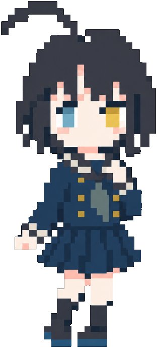

脳トレ道場：続けたくなる道場（モックアップ）
docs/brain-training-design.md の14章の画面です。夜の机（濃い藍）の上に、和紙の札。計算力は朱、記憶力は藍。判子は形でも分ける（計算力は丸、記憶力は角）。値は見本です。
- 朱：計算力・判子
- 藍：記憶力
- 和紙：問題と結果の面
- 橙：いまの場所（アプリの強調色）
- 金：自己ベスト（1回に1つ）
スマホ（390×844）
脳トレ道場

思い出しの箱に、3日前の格言が届いてるよ。今日は記憶力の日にしよう！
今日の稽古🏯 記憶力
6週間コース 8回目
- 🗃️思い出しの箱格言（3日目）
- 🏯宮殿に12個わが家
- 🔢数字8けた
今週11月1日（日）
- 月26計
- 火27記
- 水28
- 木29計記
- 金30
- 土31記
- 日1
計算力 2/3記憶力 3/5
⏰ 寝る前に稽古する
計算力
今日の稽古コース 5/10
- ⚡スピード計算約2分
- 👁️ちらっと見る約3分
- 🔁N問前の答え約3分
コースの道あと6回で、最初の自分とくらべる
- 測
- 1月
- 3月
10回目のあと、1か月後と3か月後に「おさらい」4回ずつ。
自由に練習自己ベスト
スピード計算
1 / 3 ・ 今日の稽古
9 / 20れんぞく 6段2 九九も
7 × 8
56
今日の成績
11月1日（日）の稽古
計算力 コース 5/10
- スピード計算1問1.9秒前より0.3秒速い
- ちらっと見る0.12秒で見えた前より0.02秒速い ★ 自己ベスト
- N問前の答え3つ前まで前と同じ
🎯あと5回で、最初の自分とくらべる日
ちらっと見るで自己ベスト！ 0.12秒で、まわりの印まで見えたね。
いつ稽古するか決めておくと、続けやすいよ。
記憶力
今日の稽古コース 8/30
- 🗃️思い出しの箱約2分
- 🏯宮殿に12個約5分
- 🔢数字 8けた約2分
6週間コース週5回が目安・あと23回
- 1週
- 2週
- 3週
- 4週
- 5週
- 6週
記憶の道
- 🏠宮殿づくり
- 🏫学校
講9/9 - 📅毎日の練習
- 📝記憶テスト
（6週間後）
わたしの宮殿
- 🏠 わが家14か所・練習
- 🏯 見本のお城30か所・宝物
- ＋ 作る
宮殿に置く
2 / 3 ・ わが家に12個 ・ 3か所目
からむ絵のヒント冷蔵庫を開けると、ぞうがぎゅうぎゅうにつまっていて、ドアが閉まらない！
場所と言葉がぶつかる場面を、目をとじて2秒。においや音もつけると、もっと残るよ。
思い出す
わが家をたどって、置いた言葉を順に押してね
- 🚪玄関のドアりんご
- 👟くつ箱ロケット
- 🧊冷蔵庫ぞう
- 🔥コンロかさ
- 🍽️食卓？
- 🛋️ソファ
- 📺テレビ
- 🕰️時計
- 📚本だな
- 🪜階段
- 🛏️ベッド
- 🌤️ベランダ
思い出しの箱
長く覚えたいものは、間をあけて何度か思い出すと残りやすいよ。
- 1日あと
- 3日あと
- 1週あと
- 2週あと
- 1か月あと
- 📜将棋の格言10今日見本のお城 1〜10か所目・3日目
- 🌿春の七草あと4日見本のお城 11〜17か所目・1週間目
宝物の棚（1か月たっても思い出せた）
- 🪐 太陽系の惑星
- ☗ 四間飛車と美濃囲い
思い出しの箱
将棋の格言10 ・ 1週間ぶり ・ 4か所目
- 1
- 2
- 3
- 4
- 5
- 6
- 7
- 8
- 9
- 10
頭の中で思い出してから、めくったよ
歩のない将棋は負け将棋
置いた絵玄関で、歩が1枚もいなくて、王さまがしょんぼり泣いている！
選ぶより、自分で思い出すほうが残るよ。出なくても、ここで絵を見直せば大丈夫。
PC（1366×768）
脳トレ道場
思い出しの箱に、3日前の格言が届いてるよ。今日は記憶力の日にしよう！
今日の稽古🏯 記憶力
6週間コース 8回目
- 🗃️思い出しの箱格言（3日目）
- 🏯宮殿に12個わが家
- 🔢数字8けた
⏰ 寝る前に稽古する
今週11月1日（日）
- 月26計
- 火27記
- 水28
- 木29計記
- 金30
- 土31記
- 日1
計算力 2/3記憶力 3/5
今日の成績
11月1日（日）の稽古
計算力 コース 5/10
- スピード計算1問1.9秒前より0.3秒速い
- ちらっと見る0.12秒で見えた前より0.02秒速い ★ 自己ベスト
- N問前の答え3つ前まで前と同じ
🎯あと5回で、最初の自分とくらべる日
ちらっと見るで自己ベスト！ 0.12秒で、まわりの印まで見えたね。
いつ稽古するか決めておくと、続けやすいよ。